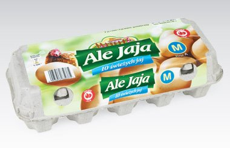

|
Strona główna
JAK ZROZUMIEĆ JAJA?
Kupując jaja w sklepie, spotykamy się z różnymi oznaczeniami. L, 0, 25 czy 17 są dla nas jajęcą codziennością. W niniejszym artykule postaram się nieco przybliży temat tajemniczych znaków.
Gdzie dokładnie można spotkać oznaczenia?
Litery (S, M, L, XL) zazwyczaj umieszczane są na wytłaczance. Cyfry zaś – na skorupce jaj.
Co one oznaczają?
Pierwsze z nich, litery, mają identyczne znaczenie, co
ich odpowiedniki na metkach ubrań. S mówi nam, że jajo jest
małe, M – średnie, L – duże, a XL – przepotężne. Sprawa
komplikuje się nieco w przypadku symboli na skorupkach
jaj. Pierwszy z nich to cyfra. Informuje ona nas o rodzaju
chowu kur, naczelnych producentów jaj. Klasa 0 oznacza, że
produkcja jaj przebiega ekologicznie. Jaja z klasy 1
poszczycić się mogą chowem wolnowybiegowym, klasy 2 –
ściółkowym, a 3 – klatkowym. Pozostałe znaki to oznaczenia producenta?
Co dają nam informacje przekazywane na jajach?
Jeśli mieszkasz w mieście, to nie wiem. Jeśli żyjesz tak, jak Pan Bóg przykazał, tj. na wsi, to
nie zwracasz na to uwagi, bo jaja kupujesz od sąsiadki
Autor: PT
Jajka – przyjaciel czy wróg człowieka?
Jeszcze kilkadziesiąt lat temu uważano, że dorosły człowiek
może zjeść maksymalnie jedno jajo kurze w tygodniu. Było to
spowodowane występowaniem znaczących ilości cholesterolu. Jak
sytuacja wygląda dzisiaj?
Najświeższe badania jaj
Zgodnie z wytycznymi WHO
człowiek, bez obawy o swoje zdrowie, może
zjadać nawet 10 jajek tygodniowo. Co z
cholesterolem? Fakt, jajka posiadają jego
spore ilości, jednak, w odróżnieniu od
ułomnych wątróbek i frajerskich serów
pleśniowych, jaja zawierają bardzo dużo
witamin (np. D, B2, B12), a także minerałów
(cynk, żelazo, miedź).
O niecodziennym zastosowaniu jaj
O tym, że z jajek można zrobić jajuwę, słyszał każdy. Jednak te
niezwykłe produkty spożywcze to nie tylko podstawa pokarmu Ukasza. Á
propos gotowania jajuwy dla Ukasza – jaja naprawdę mogą działać
pozytywnie na libido. Zawarty w nim wcześniej wspomniany cholesterol
korzystnie wpływa na syntezę testosteronu. Hormon zaś oddziałuje na
polepszenie erekcji. Warto również wspomnieć o tym, że ulańcy mogą
śmiało jeść jaja. Kurzy dar zapewnia poczucie sytości, ważnego elementu
każdej diety. Należy jednak pamiętać, że najbardziej lekkostrawne są te
ugotowane na miękko lub podane w formie jajecznicy przygotowanej na
parze. Nasz układ pokarmowy napotka trudności przy trawieniu
smażonych jaj.
Jaja – czy tylko kurze?
Nie, są też strusie, a nawet gęsie.
Autor: PT
|
|
|

|